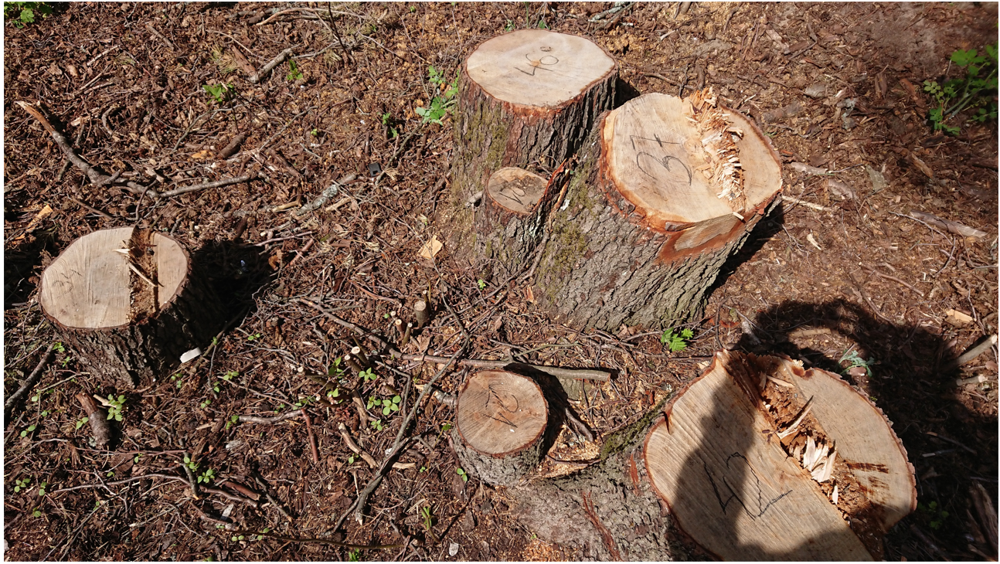
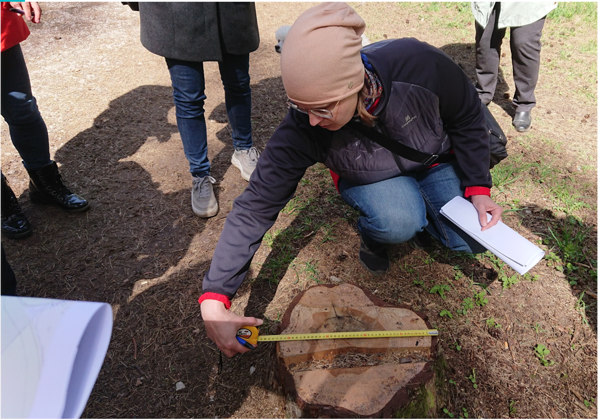
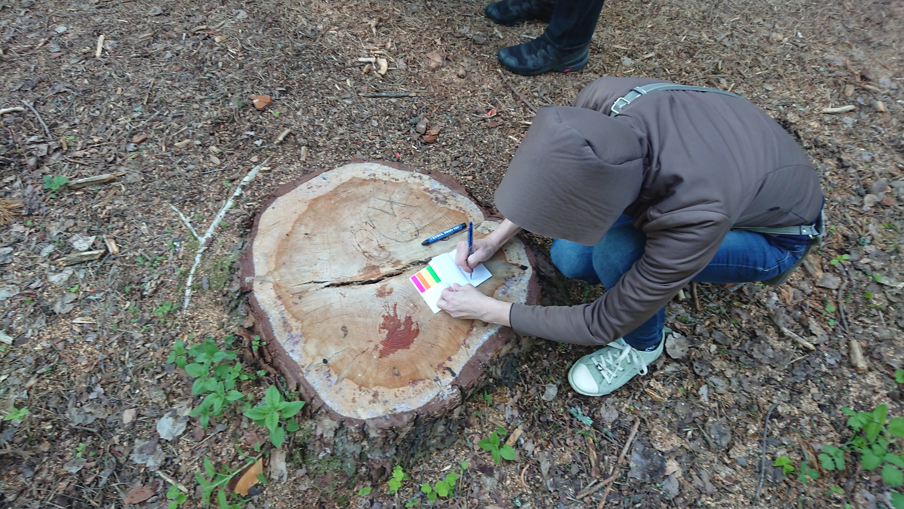
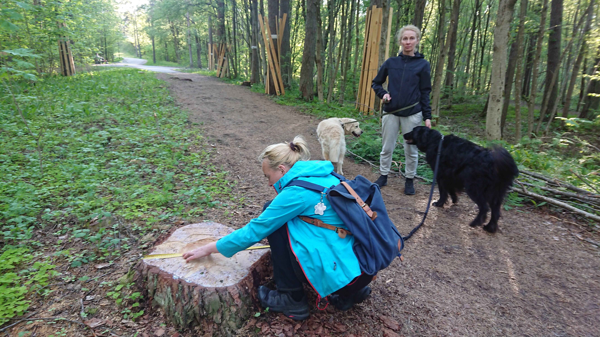

Foto 1. Nõmme-Mustamäe maastikukaitseala, Nature 2000 kaitseala. Mõõdetud, geolokeeritud ja märgitud kännud. 22.05.2022.
Foto 2. Mõõtmise instruktaaž.
Foto 3. Mõõtmine. 64 cm läbimõõduga mänd.
Foto 4. Tunneli juures. Tõenäoliselt töölõigu lõpu "tähistamiseks" igasuguse vajaduseta teest eemal maharaiutud mänd.

Foto 5. Endine rahulik metsarada.
